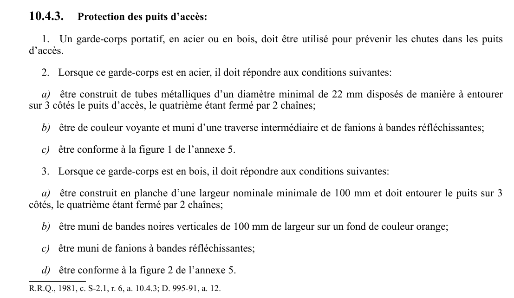

art-10.4.3-CSTC : protection des puits d'accès
Un article du wiki ⚖️ Recueil législatif
En bref
Protection des puits d'accès: 1. Un garde-corps portatif, en acier ou en bois, doit être utilisé pour prévenir les chutes dans les puits d'accès. 2. Lorsque ce garde-corps est en acier, il doit répondre aux conditions suivantes: a) être construit de tubes métalliques d'un diamètre minimal de 22 mm disposés de manière à entourer sur 3 côtés le puits d'accès, le quatrième...
🌐 LegisQuébec · 📄 PDF officiel
Texte officiel : capture du PDF
{kind=link}

Toucher l'image pour l'agrandir🔗 CSTC.pdf : page 167 · texte à jour au 30 novembre 2024
📚 Source légale : R.R.Q., 1981, c. S-2.1, r. 6, a. 10.4.3; D. 995-91, a. 12. · LégisQuébec
Voir aussi
- art. 10.4.2
- art. 10.4.4 (remplacé)
- ⚖️ Loi habilitante : LSST
- ↑ Section 10 : Travaux sur les chemins ouverts à la circulation
Pages qui pointent ici (2)
- art-10.4.2-CSTC : éclairage électrique Recueil législatif
- CSTC : Section 10 : Travaux sur les chemins ouverts à la circulation Recueil législatif